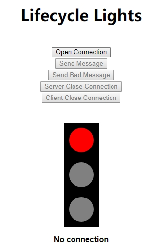
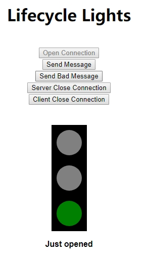
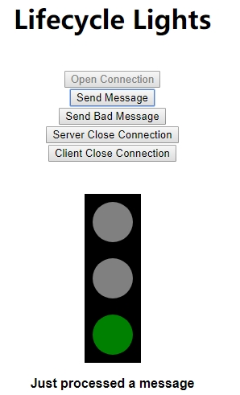
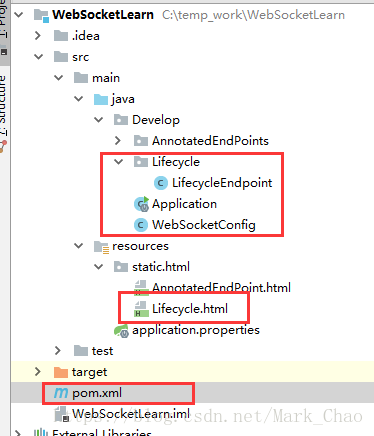

案例：生命周期灯
案例简介：
websocket没有连接时 红灯

连接成功并可以发送消息时 绿灯亮

发送错误消息（会导致连接断开，先调用了@OnClose注解方法，判断消息不和规范抛出异常调用@OnError注解方法，之后调用@Onclose注解方法） 黄灯亮

案例分析
调用服务端关闭和调用客户端关闭操作（本质上调用的都是@Onclose注解方法）
实际上流程
- 服务端关闭：
- 先调用了@OnMessage注解方法，
- 判断入参为Close ，标识需要服务端关闭连接，服务端调用当前Session.Close()
- 然后调用@OnClose注解方法关闭WebSocket连接
- 客户端关闭
- 调用@OnClose注解方法关闭WebSocket连接
总结
WebSocket声明周期
- 开始：通过@OnOpen开始
- 通讯：通过@OnMessage进行通讯
- 中断：@OnError 和 @OnClose 都会导致中断。
代码示例
代码结构

maven依赖
1
2
3
4<dependency>
<groupId>org.springframework.boot</groupId>
<artifactId>spring-boot-starter-websocket</artifactId>
</dependency>
SpringBoot启动配置（配置完成直接运行此类就可以）
1
2
3
4
5
6
7
8
9
10
11
12
13
14
15
16
17
18package Develop;
import org.springframework.boot.SpringApplication;
import org.springframework.boot.autoconfigure.SpringBootApplication;
public class Application {
/*
@SpringBootApplication
标注启动配置入口，可以发现通过一个main方法启动。
使用这个注解的类必须放置于最外层包中，因为默认扫描这个类以下的包。
否则需要自己配置@ComponentScan。
*/
public static void main(String[] arg){
SpringApplication.run(Application.class);
}
}扫描服务端端点配置（如没有，则服务端端点无法实例化成功）
1
2
3
4
5
6
7
8
9
10
11
12
13
14
package Develop;
import org.springframework.context.annotation.Bean;
import org.springframework.context.annotation.Configuration;
import org.springframework.web.socket.server.standard.ServerEndpointExporter;
public class WebSocketConfig {
public ServerEndpointExporter serverEndpointExporter() {
return new ServerEndpointExporter();
}
}服务端端点
1
2
3
4
5
6
7
8
9
10
11
12
13
14
15
16
17
18
19
20
21
22
23
24
25
26
27
28
29
30
31
32
33
34
35
36
37
38
39
40
41
42
43
44
45
46
47
48
49
50
51
52
53
54
55
56
57
58
59
60
61
62
63
64
65package Develop.Lifecycle;
import org.springframework.stereotype.Component;
import java.io.IOException;
import javax.websocket.OnClose;
import javax.websocket.OnError;
import javax.websocket.OnMessage;
import javax.websocket.OnOpen;
import javax.websocket.Session;
import javax.websocket.server.ServerEndpoint;
public class LifecycleEndpoint {
private static String START_TIME = "Start Time";
private Session session;
public void whenOpening(Session session) {
this.session = session;
session.getUserProperties().put(START_TIME, System.currentTimeMillis());
this.sendMessage("3:Just opened");
}
public void whenGettingAMessage(String message) {
System.out.println("接收消息："+message);
if (message.indexOf("xxx") != -1) {
throw new IllegalArgumentException("xxx not allowed !");
} else if (message.indexOf("close") != -1) {
try {
this.sendMessage("1:Server closing after " + this.getConnectionSeconds() + " s");
session.close();
} catch (IOException ioe) {
System.out.println("Error closing session " + ioe.getMessage());
}
return;
}
this.sendMessage("3:Just processed a message");
}
public void whenSomethingGoesWrong(Throwable t) {
this.sendMessage("2:Error: " + t.getMessage());
}
public void whenClosing() {
System.out.println("Goodbye !");
}
void sendMessage(String message) {
try {
session.getBasicRemote().sendText(message);
} catch (Throwable ioe) {
System.out.println("Error sending message " + ioe.getMessage());
}
}
int getConnectionSeconds() {
long millis = System.currentTimeMillis() -
((Long) this.session.getUserProperties().get(START_TIME));
return (int) millis / 1000;
}
}客户端页面（可以自行更改服务端连接地址）
1
2
3
4
5
6
7
8
9
10
11
12
13
14
15
16
17
18
19
20
21
22
23
24
25
26
27
28
29
30
31
32
33
34
35
36
37
38
39
40
41
42
43
44
45
46
47
48
49
50
51
52
53
54
55
56
57
58
59
60
61
62
63
64
65
66
67
68
69
70
71
72
73
74
75
76
77
78
79
80
81
82
83
84
85
86
87
88
89
90
91
92
93
94
95
96
97
98
99
100
101
102
103
104
105
106
107
108
109
110
111
112
113
114
115
116
117
118
119
120
121
122
123
124
125
126
127
128
129
130
131
132
133
134
135
136
137
138
139
140
141
142
143
144
145
146
147
148<!DOCTYPE html>
<html>
<head>
<meta http-equiv="Content-Type" content="text/html; charset=UTF-8">
<title>Lifecycle</title>
</head>
<body>
<h1 style="text-align: center;">Lifecycle Lights</h1>
<table style="text-align: left; width: 50px; margin-left: auto;
margin-right: auto;" border="0" cellpadding="20" cellspacing="0">
<tbody>
<tr>
<td style=" text-align: center; vertical-align: top;">
<div style="text-align: center;">
<form action="">
<input onclick="open_connection()" value="Open Connection" type="button" id="ocID">
<input onclick="send_valid_message()" value="Send Message" type="button" id="svmID">
<input onclick="send_invalid_message()" value="Send Bad Message" type="button" id="simID">
<input onclick="request_close_connection()" value="Server Close Connection" type="button" id="rccID">
<input onclick="close_connection()" value="Client Close Connection" type="button" id="rcID">
</form>
</div>
</td>
</tr>
<tr>
<td style=" text-align: center; vertical-align: top;">
<canvas id="myDrawing" width="200" height="210"></canvas>
<div id="traffic_light_display"></div>
</td>
</tr>
</tbody>
</table>
<div id="output"></div>
</body>
<script language="javascript" type="text/javascript">
var lifecycle_websocket;
function init() {
output = document.getElementById("output");
traffic_light_display = document.getElementById("traffic_light_display");
update_display("1", "No connection");
update_buttons();
}
function open_connection() {
lifecycle_websocket = new WebSocket("ws://localhost:8080/lights");
lifecycle_websocket.onmessage = function (evt) {
update_for_message(evt.data);
update_buttons();
};
lifecycle_websocket.onclose = function (evt) {
update_buttons();
};
}
function get_color(light_index, light_on_index) {
if (light_index == 1 && light_on_index == 1) {
return "red"
} else if (light_index == 2 && light_on_index == 2) {
return "yellow"
} else if (light_index == 3 && light_on_index == 3) {
return "green"
} else {
return "grey"
}
}
function get_light_index(message) {
return message.substring(0, 1)
}
function get_display_message(message) {
return message.substring(2, message.length)
}
function update_for_message(message) {
var display_message = get_display_message(message);
var light_index = get_light_index(message);
update_display(light_index, display_message);
}
function update_display(light_index, display_message) {
var old = traffic_light_display.firstChild;
var pre = document.createElement("pre");
pre.style.wordWrap = "break-word";
pre.innerHTML = "<b><font face='Arial'>"+display_message+"</font></b>";
if (traffic_light_display.firstChild != null) {
traffic_light_display.replaceChild(pre, traffic_light_display.firstChild);
} else {
traffic_light_display.appendChild(pre)
}
var context = document.getElementById('myDrawing').getContext('2d');
context.beginPath();
context.fillStyle = "black"
context.fillRect(65,0,70,210);
context.fill();
context.beginPath();
context.fillStyle = get_color(1, light_index); // grey
context.arc(100,35,25,0,(2*Math.PI), false)
context.fill();
context.beginPath();
context.fillStyle = get_color(2, light_index);
context.arc(100,105,25,0,(2*Math.PI), false)
context.fill();
context.beginPath();
context.fillStyle = get_color(3, light_index);
context.arc(100,175,25,0,(2*Math.PI), false)
context.fill();
}
function isOpen() {
return lifecycle_websocket != null && lifecycle_websocket.readyState == lifecycle_websocket.OPEN;
}
function update_buttons() {
ocID.disabled = isOpen();
simID.disabled = !isOpen();
svmID.disabled = !isOpen();
rccID.disabled = !isOpen();
rcID.disabled = !isOpen();
}
function send_valid_message() {
lifecycle_websocket.send("Hello")
}
function send_invalid_message() {
lifecycle_websocket.send("Helxxxlo")
}
function request_close_connection() {
lifecycle_websocket.send("close");
}
function close_connection() {
lifecycle_websocket.close();
update_display("1", "Client closed connection");
}
window.addEventListener("load", init, false);
</script>
</html>